개발
범용 프로그래밍 언어
| 언어 | 설명 | Level |
|---|---|---|
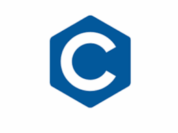 |
C언어는 안산디자인문화고등학교 재학 중 전문교과 과목인 프로그래밍, 응용프로그래밍개발 과목, 그리고 가천대학교 컴퓨터공학과의 C언어, 자료구조 교과목을 통해 학습한 경험이 있습니다. C언어를 통해 간단한 CLI 애플리케이션, Windows 시스템 제어 프로그램 구현이 가능합니다. | ★★★☆☆ |
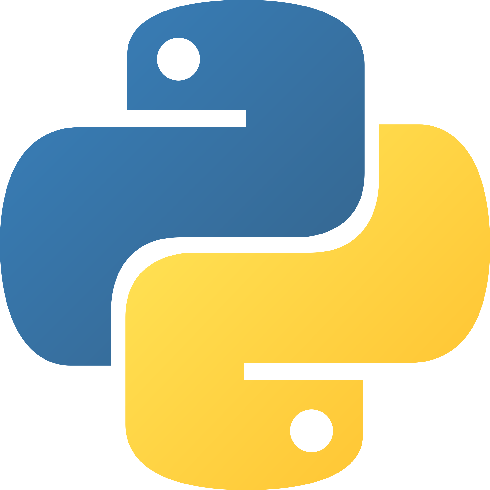 |
Python은 안산디자인문화고등학교 재학 중 전문교과 과목인 응용프로그래밍개발, 그리고 가천대학교 컴퓨터공학과의 파이썬, 자료구조, 스마트기기시스템 교과목을 통해 학습한 경험이 있습니다. 특히, 스마트기기시스템 교과목에서 실습했던 경험을 토대로 IoT 애플리케이션, 웹 소켓 구현이 가능합니다. | ★★★☆☆ |
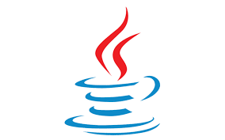 |
Java는 2020년 경기꿈의대학 제도를 통해 한양대학교 ERICA 캠퍼스에서 강의를 수강한 경험이 있고, 가천대학교 컴퓨터공학과의 JAVA 과목에서 학습한 경험이 있습니다. 간단한 GUI 프로그램 및 CLI 애플리케이션 구현이 가능합니다. | ★★★☆☆ |
WEB
| 언어 | 설명 | Level |
|---|---|---|
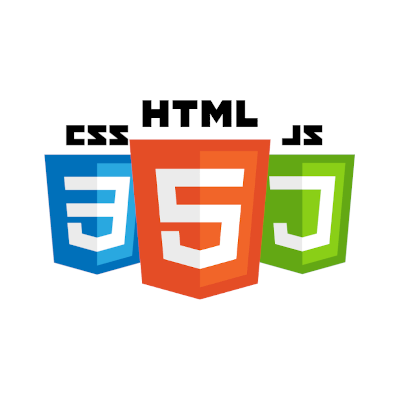 |
HTML, CSS, JavaScript 언어는 2020년에 <생활코딩! HTML+CSS+자바스크립트> 도서를 통해 실습해본 것을 필두로, 2025년 1학기에 가천대학교 컴퓨터공학과의 웹프로그래밍 과목으로 학습한 경험이 있습니다. 본 포트폴리오 웹사이트를 포함하여 구조화된 웹 UI/UX를 구현할 수 있습니다. | ★★★★☆ |
 |
PHP는 2020년에 <PHP로 쉽게 시작하는 웹 프로그래밍> 도서를 통해 실습해 보았으며, MariaDB, MySQL 등의 RDBMS와 연동하여 기본적인 CRUD를 지원하는 웹 애플리케이션을 구현할 수 있습니다. 2020년부터 2021년까지 고교 동아리 활동으로 <컬쳐크래프트>라는 웹 콘텐츠 창작 동아리 전용 웹사이트를 개발하고 운영한 경험이 있습니다. 2020년에 경기도일자리재단에서 운영하는 【PHP + MySQL을 통한 서버 사이드 웹사이트 구축하기】 강좌를 수료했습니다. | ★★★★☆ |
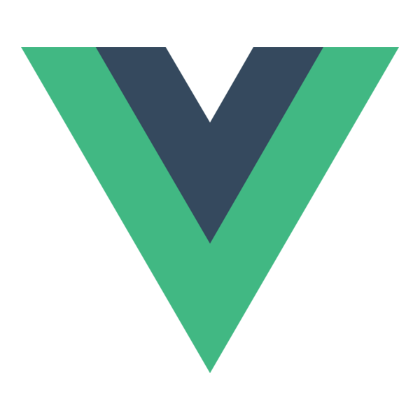 |
2025년 가천대학교 컴퓨터공학과의 웹프로그래밍 교과목을 통해 Vue.js를 학습 및 실습해본 경험이 있습니다. 본 포트폴리오 웹사이트와 같이 간단한 웹 UI/UX를 구현할 수 있습니다. | ★★☆☆☆ |
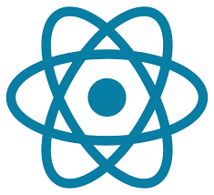 |
React.js는 2025년 가천대학교 컴퓨터공학과의 고급웹프로그래밍 교과목을 통해 학습 및 실습해본 경험이 있으며, React를 통해 기본적인 CRUD 기능을 하는 웹 애플리케이션을 구축할 수 있습니다. | ★★★☆☆ |
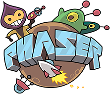 |
Phaser.js는 2025년 초부터 주력으로 학습 및 실습하기 시작한 JavaScript 기반 게임 엔진입니다. 해당 게임 엔진을 활용하여 슈팅 액션 게임인 《젠더리스 에러》와 액션 어드벤처 게임인 《금과 은의 조화》와 같은 2D 액션 게임을 개발한 경험이 있습니다. | ★★★★★ |
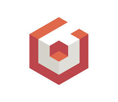 |
Babylon.js는 2025년 초에 3D 슈팅 액션 게임 프로젝트 구현을 위해 사용한 JavaScript 기반 3D 그래픽 렌더링 엔진입니다. 숙련도는 낮으나, 슈팅 액션 게임인 《젠더리스 에러》에서 3D 공간에서 진행되는 슈팅 액션 미니게임을 개발한 경험이 있습니다. | ★☆☆☆☆ |
인프라
DB
| DB 종류 | 설명 | Level |
|---|---|---|
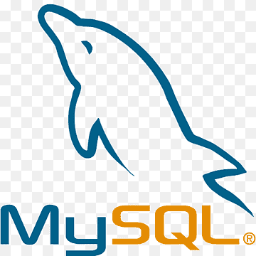 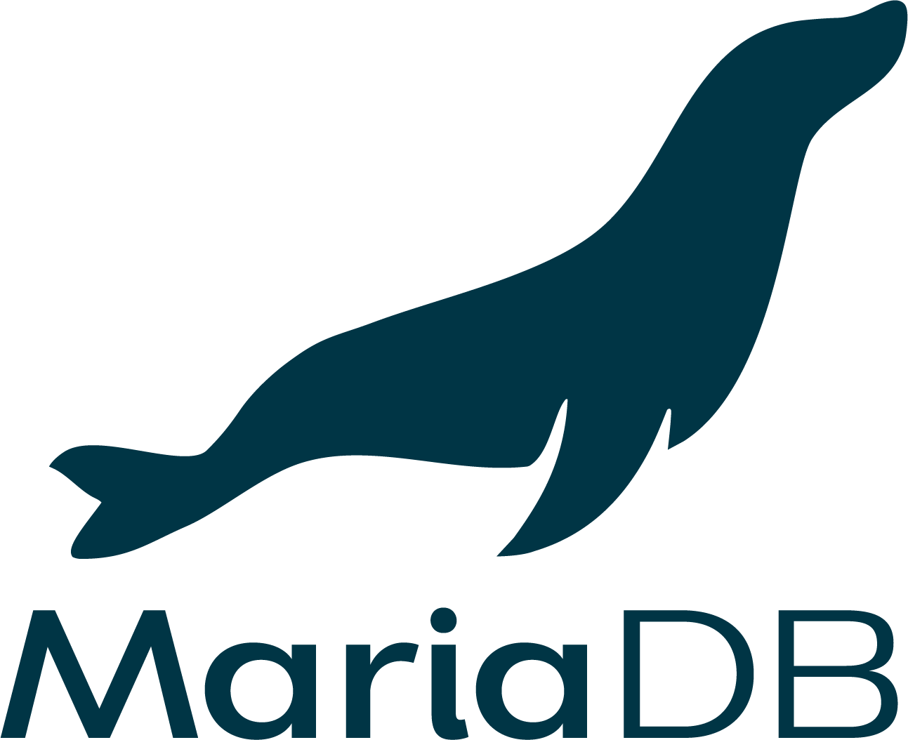 |
2020년에 PHP를 통해 MariaDB와 연동하여 서버 사이드 프로그래밍 실습을 해본 경험을 필두로, SQL 개발자 자격 시험 및 가천대학교 컴퓨터공학과의 데이터베이스 교과목을 통해 학습한 경험이 있습니다. CRUD 기능 및 각종 추가 기능을 위해 사용되는 SQL 쿼리를 어느정도 능숙하게 활용하여 DB에 적용할 수 있습니다. | ★★★★☆ |
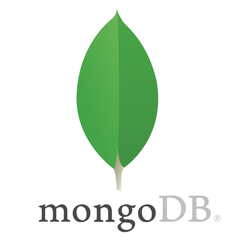 |
2025년에 가천대학교 컴퓨터공학과의 웹서버프로그래밍 교과목을 통해 MongoDB를 학습 및 실습해본 경험이 있습니다. RDBMS에 비해 숙련도는 낮지만, 기본적인 CRUD 구현을 위한 DB 연동 설정을 할 수 있습니다. | ★★☆☆☆ |
보안
| 플랫폼 | 설명 | Level |
|---|---|---|
| 2022년 10월부터 2024년 7월까지 공군에서 정보보호병으로 근무하면서 NAC 관리자로서 지니언스 사의 Genian NAC와 NetMan 사의 Smart NAC와 같은 네트워크 접근 제어 프로그램을 사용한 경험이 있습니다. 설정되어 있는 보안 정책에 따라 차단되는 노드에 대한 조치와 IP 및 사용자 계정을 매개로 하여 로그 추적을 할 수 있는 정도의 숙련도를 갖고 있습니다. | ★★☆☆☆ | |
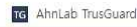 |
2022년 10월부터 2024년 7월까지 공군에서 정보보호병으로 근무하면서 서버 측 방화벽 관리자로서 AhnLab 사의 AhnLab TrusGuard 방화벽을 사용해본 경험이 있습니다. IP와 포트, 액션 값을 기반으로 트래픽 로그 조회 및 추적, 각종 차단 및 허용 정책 설정, IPv4 블랙리스트 설정을 할 수 있을 정도의 숙련도를 갖고 있습니다. | ★★★☆☆ |